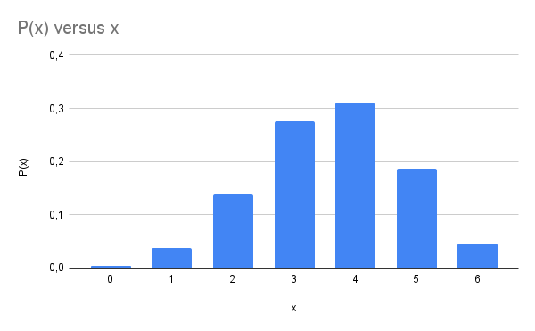

Disciplinas
-
Estatística e Probabilidade Concluído
Materiais
- Estatística - Aula 07 - Variáveis aleatórias
-
Professor ministrante: André Fleury (Univesp)
Conteúdo
Variáveis aleatórias
Objetivos:
- Apresentar os conceitos de distribuições de probabilidade.
- Apresentar os principais parâmetros das distribuições de probabilidade.
Atribuir descrição numérica aos resultados dos experimentos.
A | a Evento Probabilidade
-------|-----
A AA | Aa {AA} P(AA) = 1/4
-------|-----
a aA | aa {Aa} P(Aa) = 1/2
{aa} P(aa) = 1/4
Descrever o valor que corresponde ao resultado de determinado experimento.
🪙🪙 V.A. Probabilidade
🪙🪙 x 2 X = 0 P₍ₖₖ₎ = 1/4
🪙🪙 X = 1 P₍ₖᶜ₎ = 1/2
X = 2 P₍ᶜᶜ₎ = 1/4
Qual a função que associa os diferentes valores da V.A. aos resultados possíveis?
- Central de relacionamento com clientes com 6 atendentes.
- Probabilidade de estar atendendo: 0,6.
- Qual função descreve a probabilidade de estarem em atendimento?
- x = Número de atendentes ocupados.
- x = 0, 1, 2, 3, 4, 5, 6.
- P(x=0) = 0,4⁶ = 0,0041
- P(x=1) = 6 · 0,6 · 0,4⁵ = 0,0369
- P(x=2) = 15 · 0,6² · 0,4⁴ = 0,1382
- P(x=3) = 20 · 0,6³ · 0,4³ = 0,2765
- P(x=4) = 15 · 0,6⁴ · 0,4² = 0,3110
- P(x=5) = 6 · 0,6⁵ · 0,4 = 0,1866
- P(x=6) = 0,6⁶ = 0,0467
| x | P(x) | 0 | 0,0041 | 1 | 0,0369 | 2 | 0,1382 | 3 | 0,2765 | 4 | 0,3110 | 5 | 0,1866 | 6 | 0,0467 |
|---|
.
Função Probabilidade - Formato gráfico:
Função Probabilidade - Formato expressão:
Variável Aleatória Discreta:
Admite um número finito de valores ou tem uma quantidade enumerável de valores.
- Exemplo:
- Dado.
- Moeda.
- a) P(X = x₀) ≥ 0
- b) ∑P(X = x₀) = 1
Pode tomar um número infinito de valores e esses valores podem ser associados a mensurações em uma escala continua.
- Copo
- Fita métrica para medir o copo.
- P(X = 0,2000000...m) = 0
- a) f(x) ≥ 0
- b) ᵇₐ∫ f(x)dx = P(a < x ≤ b), b > a
- c) ∫₋⁺∞ f(x) dx = 1
- Esperança matemática (média).
- Variância.
- Desvio Padrão.
γ = E₍ₓ₎ = ∑xᵢ·P(xᵢ)
- Exemplo: lançamento de um dado.
- γ = (1/6)·1 + (1/6)·2 + (1/6)·3 + (1/6)·4 + (1/6)·5 + (1/6)·6 =
- γ = (1/6) + (2/6) + (3/6) + (4/6) + (5/6) + (6/6) = 21/6 = 7/2
| xᵢ | P(xᵢ) | 1 | 1/6 | 2 | 1/6 | 3 | 1/6 | 4 | 1/6 | 5 | 1/6 | 6 | 1/6 |
|---|
Variável continua:
γ = E₍ₓ₎ = ∑xᵢ·P(xᵢ)
- Exemplo: lançamento de um dado.
- γ = (1/6)·1 + (1/6)·2 + (1/6)·3 + (1/6)·4 + (1/6)·5 + (1/6)·6 =
- γ = (1/6) + (2/6) + (3/6) + (4/6) + (5/6) + (6/6) = 21/6 = 7/2
| xᵢ | P(xᵢ) | 1 | 1/6 | 2 | 1/6 | 3 | 1/6 | 4 | 1/6 | 5 | 1/6 | 6 | 1/6 |
|---|
Variância - VAR (X)
Grau de dispersão de probabilidade em torno da média. ⚽
- Exemplo: lançamento de um dado.
- δ² = (1 - 7/2)²·1/6 + (2 - 7/2)²·1/6 + (3 - 7/2)²·1/6 + (4 - 7/2)²·1/6 + (5 - 7/2)²·1/6 + (6 - 7/2)²·1/6 =
- δ² = (2/2 - 7/2)²·1/6 + (4/2 - 7/2)²·1/6 + (6/2 - 7/2)²·1/6 + (8/2 - 7/2)²·1/6 + (10/2 - 7/2)²·1/6 + (12/2 - 7/2)²·1/6 =
- δ² = (- 5/2)²·1/6 + (- 3/2)²·1/6 + (- 1/2)²·1/6 + (1/2)²·1/6 + (3/2)²·1/6 + (5/2)²·1/6 =
- δ² = 25/4 · 1/6 + 9/4 · 1/6 + 1/4 · 1/6 + 1/4 · 1/6 + 9/4 · 1/6 + 25/4 · 1/6 =
- δ² = 25/24 + 9/24 + 1/24 + 1/24 + 9/24 + 25/24 =
- δ² = (25 + 9 + 1 + 1 + 9 + 25) /24
- δ² = 70/24 = 35/12 = 2,9
| xᵢ | P(xᵢ) | 1 | 1/6 | 2 | 1/6 | 3 | 1/6 | 4 | 1/6 | 5 | 1/6 | 6 | 1/6 |
|---|
Propriedade da média:
- E(k) = k, se k é constante.
- E(x·k) = k·E(x)
- E(x+y) = E(x)+E(y)
- E(x-y) = E(x)-E(y)
- E(x·y) = E(x)·E(y) se x e y independentes.
Variância - Var(x)
Desvio padrão = √variância
Mediana:
- Valor numérico que separa o conjunto pela metade.
- Conjunto {3, 3, 5, 7, 9}
- Md = 5
Moda:
- Valor numérico de maior frequência.
- Conjunto {3, 3, 5, 7, 9}
- Mo = 3